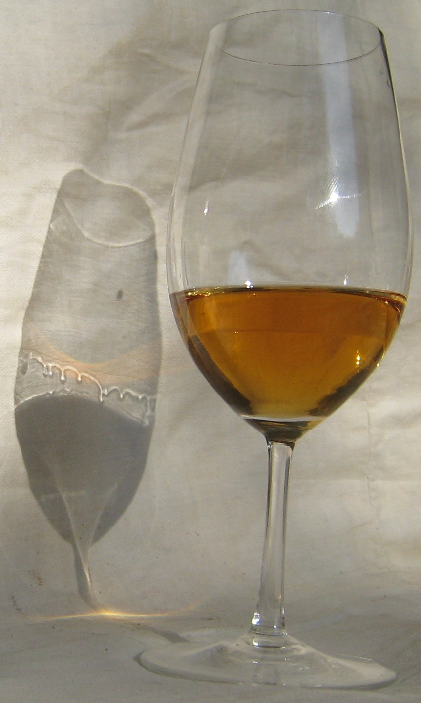

Dos manchas cotidianas con física de superficie: el vino que trepa por la copa y el café que se junta en el borde
Serví una copa de vino, hacelo girar y dejala quieta. En unos minutos, una película fina sube por el vidrio, se junta en un anillo y empieza a caer en gotas que bajan como lágrimas. Ahora derramá una gota de café sobre la mesada y dejala secar: queda un anillo oscuro en el borde y el centro casi limpio. Las dos manchas son física de superficie, pero, como se va a ver, por razones distintas.
La tensión superficial no tiene por qué ser la misma en toda una superficie. Según Bush, del MIT, depende de la temperatura y de la composición química, y cuando cambia de un punto a otro aparece un flujo: el flujo de Marangoni [1]. La superficie con más tensión tira con más fuerza que la de menos tensión, y arrastra al líquido de abajo [1]. Bush lo resume con una conclusión fuerte: no puede haber un sistema en reposo si la tensión superficial varía a lo largo de la superficie [1].
El ejemplo más simple es el barquito de jabón. Bush lo muestra con un barquito de 2,5 cm que lleva un poco de jabón en la popa: el jabón sale por atrás, baja la tensión superficial detrás del barco, y la diferencia entre la tensión de adelante y la de atrás lo empuja hacia adelante [1].
La cinchada en la superficie: imaginá la superficie del agua como una lámina elástica que todos tiran hacia sus bordes. Si en un punto la lámina se afloja, el resto la tira hacia afuera, y lo que está apoyado encima se mueve hacia donde tiran más fuerte. Eso es el efecto Marangoni: el líquido corre desde donde la tensión es baja hacia donde es alta.
Bush cuenta que el primer flujo de Marangoni estudiado fue justamente el de las lágrimas del vino, descripto por James Thomson en 1885, una década antes del primer trabajo publicado por Marangoni sobre el tema [1]. El mecanismo es este [1]:

El proceso convierte energía química en movimiento y, al final, en energía potencial gravitatoria, y sigue mientras quede alcohol para evaporar [1]. Bush agrega que los sommeliers toman las lágrimas como un indicador de la calidad del vino [1].
La mancha de café parece un caso parecido, pero no lo es. En 1997, Robert Deegan y sus colegas de la Universidad de Chicago mostraron que el anillo se forma por un tipo de flujo capilar que nadie había estudiado [2]. Encontraron que el anillo aparece con muchísimas combinaciones de superficies, sólidos y líquidos, siempre que se cumplan tres condiciones [2]:
Como el borde no se mueve, el líquido que se evapora cerca del borde tiene que reponerse con líquido del interior de la gota. Eso genera un flujo hacia afuera que arrastra prácticamente todas las partículas de café hasta el borde [2]. Deegan y sus colegas comprobaron, además, que los mecanismos que suelen transportar partículas, entre ellos las diferencias de tensión superficial, la difusión y la gravedad, son despreciables en la formación del anillo [2].
Una explicación corregida: los propios apuntes de Bush atribuyen el anillo de café a un flujo de Marangoni por enfriamiento en el borde [1]. El trabajo de Deegan y sus colegas muestra que, en las condiciones que estudiaron, las diferencias de tensión superficial no son lo que forma el anillo, sino el flujo capilar que repone lo que se evapora en el borde anclado [2]. Es un buen ejemplo de cómo una explicación razonable puede no ser la correcta hasta que alguien mide.
Dos manchas cotidianas, dos mecanismos. En la copa, el alcohol que se evapora deja la película con más tensión superficial, y el efecto Marangoni sube el vino por la pared hasta que cae en lágrimas. En la mesada, el borde anclado de la gota obliga al líquido a correr hacia afuera para reponer lo que se evapora, y el café se acumula en un anillo. Entender esa diferencia sirve, por ejemplo, en la impresión y el recubrimiento de superficies, procesos en los que, según Deegan y sus colegas, estos anillos influyen [2].
Pregunta para la comunidad: ¿Qué esperás que pase con las lágrimas si tapás la copa con un plato? ¿Y con la mancha de café si la gota se seca en un lugar muy húmedo, donde casi no hay evaporación?